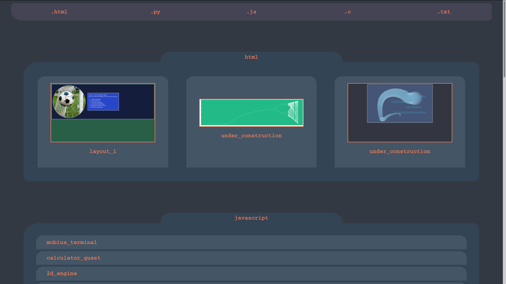

./this/front_page.html
<!DOCTYPE html>
<html lang="en">
<meta charset="UTF-8">
<title>Page Title</title>
<meta name="viewport" content="width=device-width,initial-scale=1">
<link rel="stylesheet" href="style.css">
</style>
<body>
<ul class="top_menu">
<li><a href="#html">.html</a></li>
<li><a href="#python">.py</a></li>
<li><a href="#javascript">.js</a></li>
<li><a href="#C">.c</a></li>
<li><a href="#text">.txt</a></li>
</ul>
<wedge id="html">h</wedge>
<div class="bookmark">
html
</div>
<div class="image_box">
<a href="./soccer_page/formatted.html"/>
<img src="./soccer_page/screenshot.png">
<p>layout_1</p>
</a>
<a href="#"/>
<img src="test.png">
<p>under_construction</p>
</a>
<a href="#"/>
<img src="test1.png">
<p>under_construction</p>
</a>
</div>
<wedge id="javascript">h</wedge>
<div class="bookmark">
javascript
</div>
<div class="link_box">
<a href="https://boris-volkov.github.io/games/terminal.html">mobius_terminal</a>
<a href="https://boris-volkov.github.io/games/quest/quest.html">calculator_quest</a>
<a href="https://boris-volkov.github.io/games/game/game.html">2d_engine</a>
<a href="https://boris-volkov.github.io/games/sixteens/fifteen.html">fifteen_puzzle</a>
<a href="https://boris-volkov.github.io/games/sixteens/sixteens.html">sixteen_puzzle</a>
<a href="./princess/formatted.html">the_princess's_test</a>
<a href="https://boris-volkov.github.io/games/territory/page.html">territories</a>
<a href="https://boris-volkov.github.io/games/sixteens/gradient.html?size=32">gradient_maker</a>
</div>
<wedge id="python">h</wedge>
<div class="bookmark">
python
</div>
<div class="link_box">
<a href="./chaos/formatted.html">chaos_graph</a>
<a href="#">under_construction</a>
<a href="#">under_construction</a>
<a href="#">under_construction</a>
<a href="#">under_construction</a>
<a href="#">under_construction</a>
<a href="#">under_construction</a>
<a href="#">under_construction</a>
</div>
<wedge id="C">h</wedge>
<div class="bookmark">
C
</div>
<div class="link_box">
<a href="#">under_construction</a>
<a href="#">under_construction</a>
<a href="#">under_construction</a>
<a href="#">under_construction</a>
<a href="#">under_construction</a>
<a href="#">under_construction</a>
<a href="#">under_construction</a>
<a href="#">under_construction</a>
</div>
<wedge id="text">h</wedge>
<div class="bookmark">
text
</div>
<div class="link_box">
<a href="#">under_construction</a>
<a href="#">under_construction</a>
<a href="#">under_construction</a>
<a href="#">under_construction</a>
<a href="#">under_construction</a>
<a href="#">under_construction</a>
<a href="#">under_construction</a>
<a href="#">under_construction</a>
</div>
</body>
</html>
./this/template.html
<!doctype html>
<html lang="en">
<head>
<meta charset="utf-8">
<title>html demos</title>
<link href="../style.css" rel="stylesheet"/>
</head>
<body>
<div class="image">
<img class="screenshot" src="screenshot.png">
</div>
WRITE_HERE
</body>
</html>
./this/style.css
* {
color: coral;
font-family : Courier;
font-weight : 700;
box-sizing : border-box; /* to correct sizes */
}
body {
background-color : #333942;
}
a {
text-decoration: none;
}
.top_menu {
position : sticky; /* stick to top of screen */
top : 0;
width : 95vw;
list-style: none;
border-radius:10px;
border-bottom-left-radius: 30px;
padding: 0;
margin: auto;
overflow: auto; /* to keep its form */
}
.top_menu li {
text-align:center;
float: left;
width: 20%;
}
.top_menu li a {
background-color: #445;
color: coral;
text-decoration: none;
display: block; /* to take up full space */
padding: 15px 20px;
}
.top_menu li a:hover {
background: #358;
}
img.screenshot {
width: 60vw;
object-fit: contain;
margin-left:auto;
margin-right:auto;
display: block; /* to be able to center it */
}
div, pre {
margin: auto;
padding: 10px;
padding-left: 40px;
width: 90vw; /* 90% of viewport width */
border-radius: 16px;
border-top-left-radius: 40px;
tab-size: 4; /* otherwise its 8 spaces*/
-moz-tab-size: 4;
}
pre, a {
white-space: pre-wrap; /* to wrap text */
word-break: keep-all /* so words don't get broken in wrap */
}
div {
padding: 30px;
}
div.bookmark { /* the little tab above all the boxes */
text-align: center;
padding: 5px;
width: 36vw;
background-color : #345;
margin-bottom : 0;
border-radius: 0;
margin-top: 70px;
border-top-right-radius : 30px;
border-top-left-radius : 30px;
}
div.image {
background-color: #011;
}
.link_box {
background: #345;
margin: 0 auto 30px; /* top sides bottom */
}
.link_box a {
display:block; /* to take up full row */
background: #456;
padding: 10px;
padding-left: 30px;
margin: 5px;
border-top-left-radius: 20px;
border-top-right-radius: 20px;
}
.link_box a:hover {
background: #358;
}
.image_box {
background: #345;
display: flex;
flex-wrap: wrap;
justify-content: space-between;
}
.image_box a {
background: #456;
max-width: 30%;
border-top-left-radius: 20px;
border-top-right-radius: 20px;
padding: 20px;
margin: 10px;
display: flex;
flex-direction : column;
align-content : center;
justify-content: center;
}
.image_box a p {
background: inherit;
text-align: center;
}
.image_box a:hover {
background: #358;
}
.image_box img {
max-width: 90%;
object-fit: cover;
padding:0px;
margin-left: auto;
margin-right: auto;
border: 2px coral solid;
}
pre.notes {
background-color: #357;
color: white;
}
pre.html {
background-color: #375;
color: #000;
}
.html kw {
color: yellow;
}
.html sc {
color: yellow;
}
pre.css {
background-color: #366;
color: #eee;
}
.css sc {
color : #3ff;
}
pre.py {
background-color: #369;
color: #000;
}
.py sc {
color: #bb2;
}
.py kw {
color: coral;
}
pre.js {
background-color: rgb(140,110,110);
color: #210;
}
.js sc {
color: #246;
}
.js kw {
color: #142;
}
sc, kw { /* special characters and key words */
background-color:inherit;
}
comment {
background-color: inherit;
}
css {
background-color: inherit;
color: white;
}
string {
background-color: inherit;
color: pink;
}
comment.css {
color: #f64;
}
comment.js {
color: #532;
}
comment.html {
color: #242;
}
comment.py {
color: #142;
}
comment sc, comment kw { /* comment overrides special symbols */
color: inherit!important;
}
wedge { /*for correct spacing when linking within page */
height: 80px;
padding-top 10px;
visibility:hidden;
}
./this/encoder.py
import sys, os.path, re
special_symbols = list('[](){};')
js_reserved = [
"await", "break", "case",
"catch", "class", "const",
"continue", "debugger", "default",
"delete", "do", "else",
"enum", "export", "extends",
"false", "finally", "for",
"function", "if", "implements",
"import", "in", "instanceof",
"interface","let", "new",
"null", "package", "private",
"protected","public", "return",
"super", "switch", "static",
"this", "throw", "try",
"True", "typeof", "var",
"void", "while", "with",
"yield",
]
py_reserved = [
'False', 'None', 'True',
'and', 'as', 'assert',
'async', 'await', 'break',
'class', 'continue', 'def',
'del', 'elif', 'else',
'except', 'finally', 'for',
'from', 'global', 'if',
'import', 'in', 'is',
'lambda', 'nonlocal', 'not',
'or', 'pass', 'raise',
'return', 'try', 'while',
'with', 'yield']
def findWholeWord(w):
return re.compile(r'\b({0})\b'.format(w)).search
if __name__ == "__main__":
if os.path.exists("./" + sys.argv[1] + "formatted.html"):
os.remove("./" + sys.argv[1] + "formatted.html")
js_readers = []
html_readers = []
css_readers = []
txt_readers = []
py_readers = []
for (root, subs, files) in os.walk("./" + sys.argv[1]):
for name in files:
if name.endswith('.js'):
with open(root+name) as temp:
js_readers.append([root+name] + temp.readlines())
if name.endswith('.html'):
with open(root+name) as temp:
html_readers.append([root+name] + temp.readlines())
if name.endswith('.css'):
with open(root+name) as temp:
css_readers.append([root+name] + temp.readlines())
if name.endswith('.txt'):
with open(root+name) as temp:
txt_readers.append([root+name] + temp.readlines())
if name.endswith('.py'):
with open(root+name) as temp:
py_readers.append([root+name] + temp.readlines())
_tp = open("template.html")
template = _tp.readlines()
_of = open("./" + sys.argv[1] + "formatted.html", "w+")
i = 0
while "WRITE_HERE" not in template[i]:
_of.write(template[i])
i += 1
for txt in txt_readers:
_of.write('<div class="bookmark">' + txt[0] + '</div>')
_of.write("<pre class=notes>\n")
for line in txt[1:]:
_of.write(line)
_of.write("</pre>\n")
for html in html_readers:
_of.write('<div class="bookmark">' + html[0] + '</div>')
_of.write("<pre class=html>\n")
for line in html[1:]:
r = line.replace("<", "<kw*^+<") # *^+ just a token for
r = r.replace(">","></kw>")
r = r.replace("*^+", ">") # this line to match. Weird, i know...
if "<kw><!--" in r:
r = r.replace("<kw><!--", '<comment class="html"><!--')
r = r.replace("--></kw>", '--></comment>')
_of.write(r)
_of.write("</pre>\n")
for css in css_readers:
_of.write('<div class="bookmark">' + css[0] + '</div>')
_of.write("<pre class=css>\n")
for line in css[1:]:
r = line
if "{" in line:
r = "<sc>"
r = r + line.replace("{", "{</sc>")
elif "}" in line:
r = line.replace("}", "<sc>}</sc>")
else:
r = "<css>" + r[:-1] + "</css>\n"
if "/*" in r:
r = r.replace('/*', '<comment class="css">/*')
r = r.replace('*/', '*/</comment>')
_of.write(r)
_of.write("</pre>\n")
for js in js_readers:
_of.write('<div class="bookmark">' + js[0] + '</div>')
_of.write("<pre class=js>\n")
for line in js[1:]:
for word in js_reserved:
if findWholeWord(word)(line):
line = line.replace(word, "<kw>" + word + "</kw>")
for sym in special_symbols:
if sym in line:
line = line.replace(sym, "<sc>" + sym + "</sc>")
if "//" in line:
line = line.replace('//', '<comment class="js">//', 1)
line = line[:-1] + "</comment>\n"
line = line.replace('/*', '<comment class="js">/*')
line = line.replace('*/', '*/</comment>')
_of.write(line)
_of.write("</pre>\n")
for py in py_readers:
_of.write('<div class="bookmark">' + py[0] + '</div>')
_of.write("<pre class=py>\n")
for line in py[1:]:
line = line.replace("<", "<")
line = line.replace(">", ">")
for word in py_reserved:
if findWholeWord(word)(line):
line = line.replace(word, "<kw>" + word + "</kw>")
for sym in special_symbols:
if sym in line:
line = line.replace(sym, "<sc>" + sym + "</sc>")
if "#" in line:
line = line.replace('#', '<comment Class="py">#', 1)
line = line[:-1] + "</comment>\n"
_of.write(line)
_of.write("</pre>\n")
i += 1
while i < len(template):
_of.write(template[i])
i += 1